Excelsior construction LLC
Branding work (visual identity, corporate image, logo design, and print materials) for a newly created construction company based in New York.
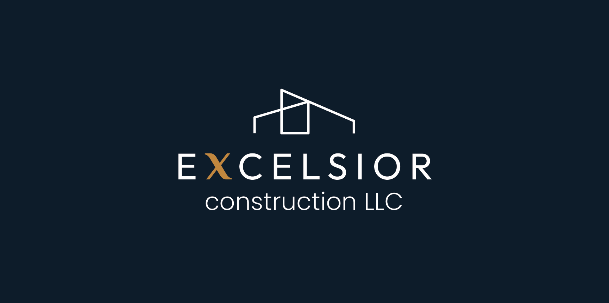
Overview
This project consisted of creating the visual identity for a newly established construction company based in New York. The goal was to build a strong and professional brand presence that could communicate reliability, trust, and clarity from the very first interaction.
The work included the development of the logo, visual identity system, and business cards.
Problem & Goals
As a newly created company, Excelsior Construction LLC needed a clear and consistent visual identity to establish credibility in a competitive market.
The goal was to design a brand that conveyed professionalism and trust, while remaining simple, recognizable, and adaptable across different formats, both digital and print.
Process
Research & Observation
The first step was to have an online meeting to discuss the company, its objectives, and all the necessary information to create a solid briefing.
Once the document was finalized, I got to work creating a counter-briefing to propose a more realistic and clear approach before starting the project.
In the counter-briefing, I also outlined all the company's most important characteristics:
- Primarily focused on high-end interior renovations.
- Modern company that seeks to reflect its quality and efficiency in its work, as well as its exclusivity.
- Located in New York, with mainly local clients (with potential for expansion).
- A new company, still in training and recently registered. It works primarily through referrals from satisfied clients.
- It needs to stand out and raise its profile through social media (visual, modern, and showcasing the quality and experience reflected in the results of its work).
References & Moodboard
The moodboard and references were centered around concepts such as structure, stability, and precision. Visual elements like grids, architectural shapes, and strong contrasts were explored to reinforce the company’s core values.
These references guided the visual direction and ensured consistency across all design decisions.
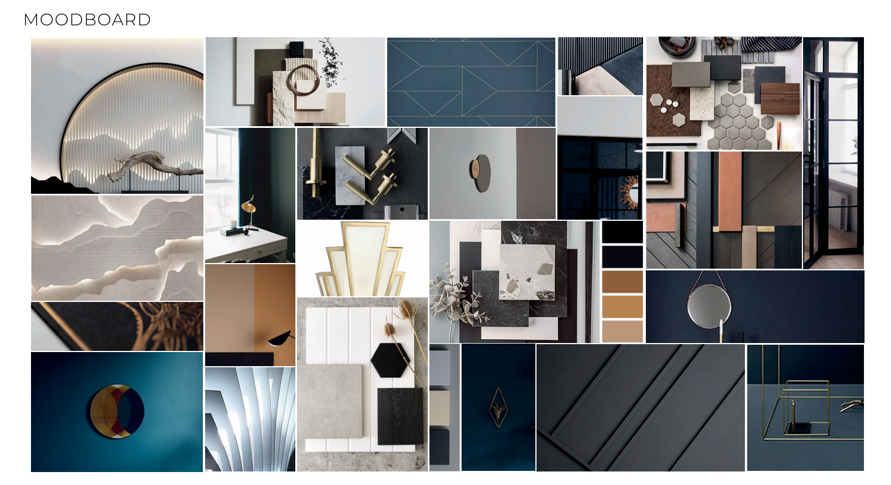
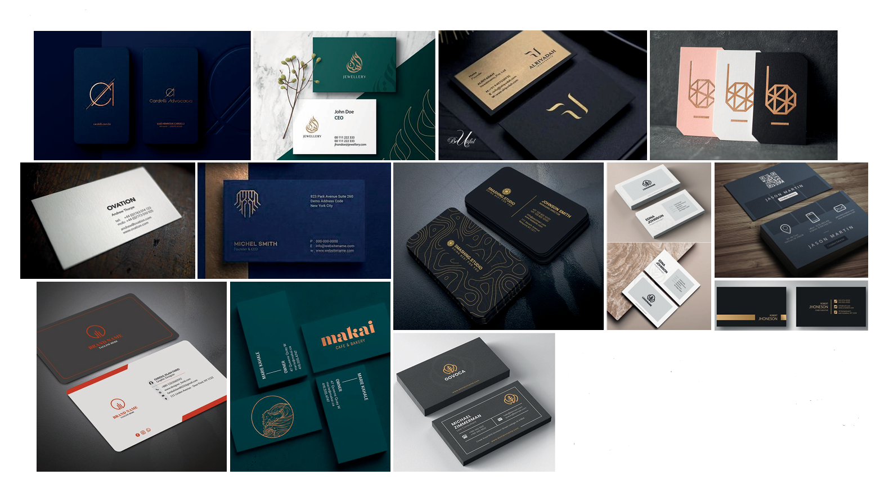
Typography
At this stage, I started searching and experimenting with typefaces to evaluate what the result and the visual impact would be with each one.
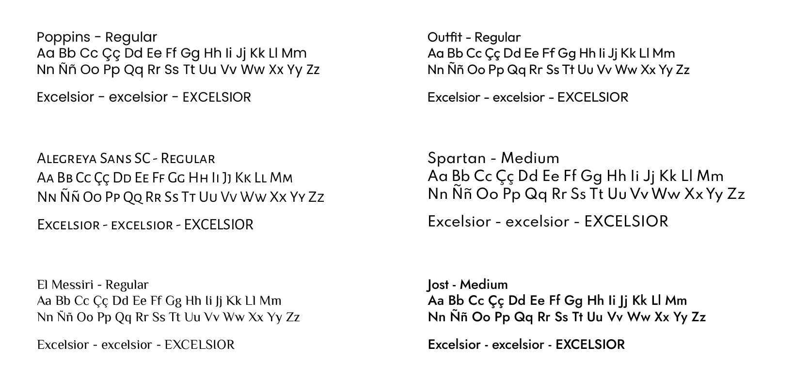
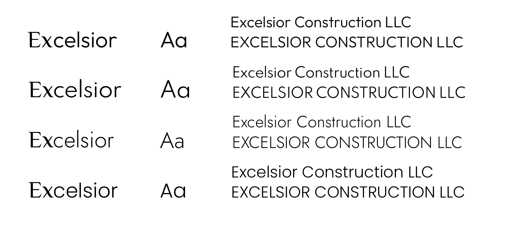
Color palette
The color palette was designed to reflect both stability and sophistication. A deep blue tone was selected to convey trust, professionalism, and reliability, while a warm ochre accent adds contrast and a sense of quality and refinement.
This combination allows the brand to feel both solid and distinctive, while remaining versatile across digital and print applications.
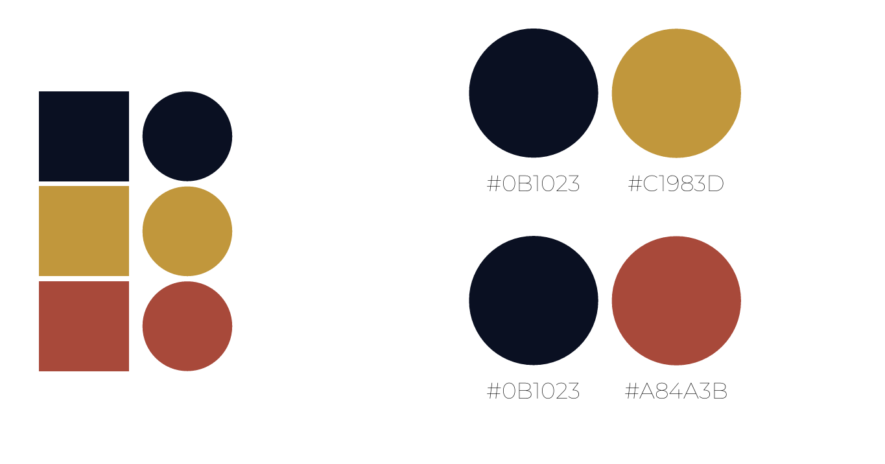
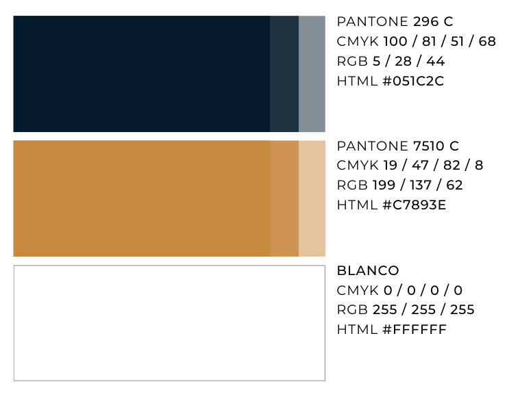
Logo
The logo was developed with a focus on clarity and structure, using typography as the main visual element. The spacing and composition were carefully adjusted to create a balanced and recognizable mark.
At the client’s request, the word “construction” is presented in lowercase, reinforcing a specific visual preference while maintaining consistency within the overall identity.
Special attention was given to maintaining readability and consistency across different sizes and formats, ensuring the logo performs effectively in a variety of contexts.
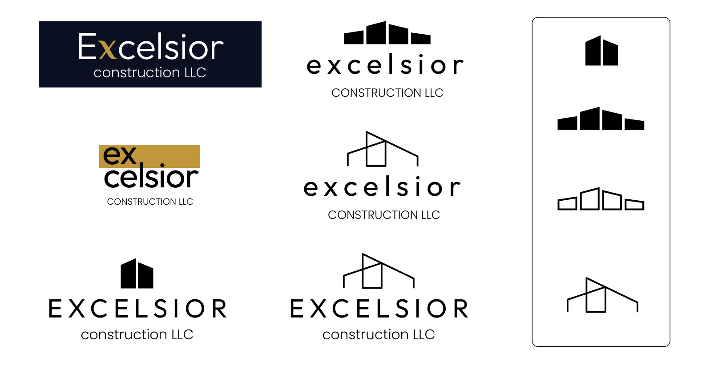
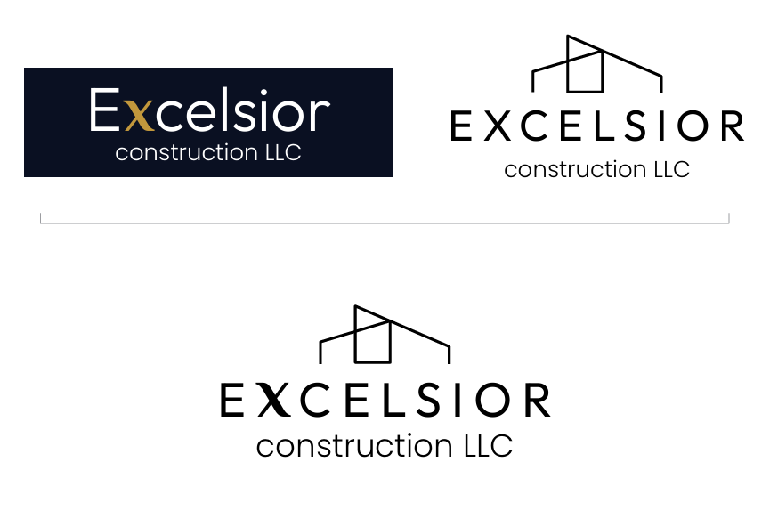
Final logo and its applications
The final logo system was designed to be flexible, allowing it to adapt to different formats and use cases. Variations were created to ensure consistent application across both digital and printed materials.
This flexibility helps maintain a strong and recognizable identity while accommodating different layout constraints.
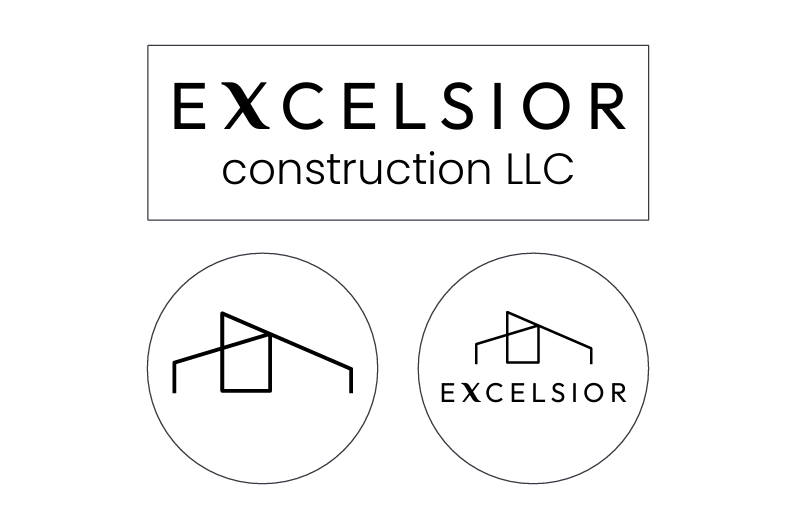
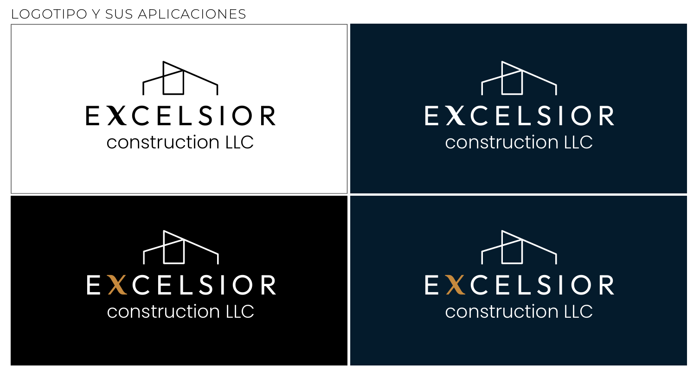
Logo: Tracking & Kerning
Tracking and kerning adjustments were essential in defining the final look of the logo. By refining the spacing between characters, the design achieves a more refined and intentional appearance.
These typographic decisions reinforce the brand’s sense of precision and attention to detail.
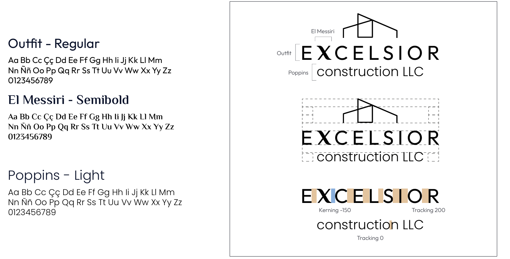
Business cards: Tests
To begin designing the business cards, I first looked for the appropriate dimensions for the United States.
Then I started doing some tests playing with the position of the elements, the text, the colors, creating various backgrounds by changing the size and opacity of the logo.
When I presented some of the ideas to the company, they told me that they ultimately wanted to include two people on the business cards with their respective contact information, so the placement of the information was more limited, but from there I was able to start working on the final design.
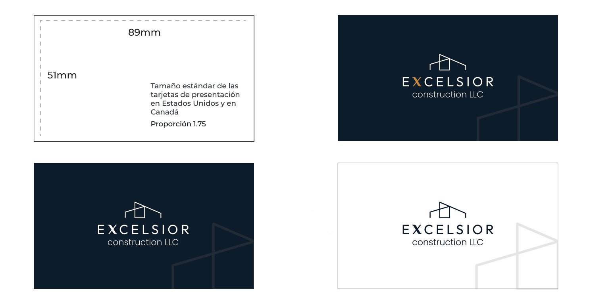
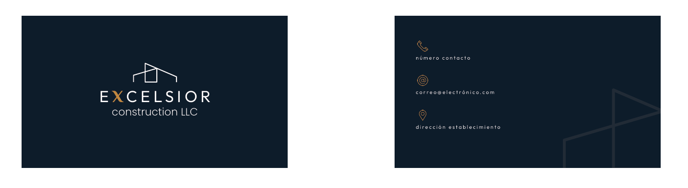
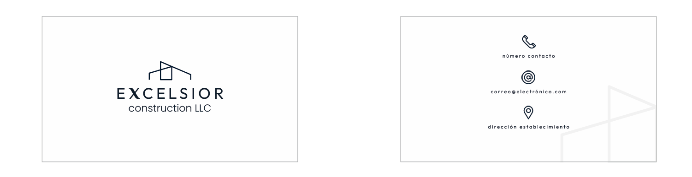
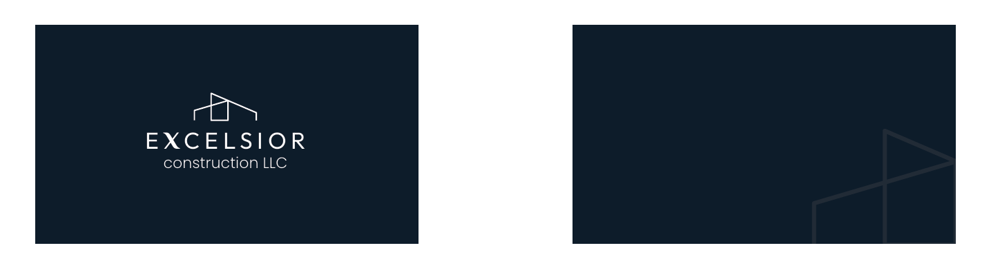
Final Outcome
Brand design document:
Brand Manual PDF
Business cards:
Final design business cards PDF
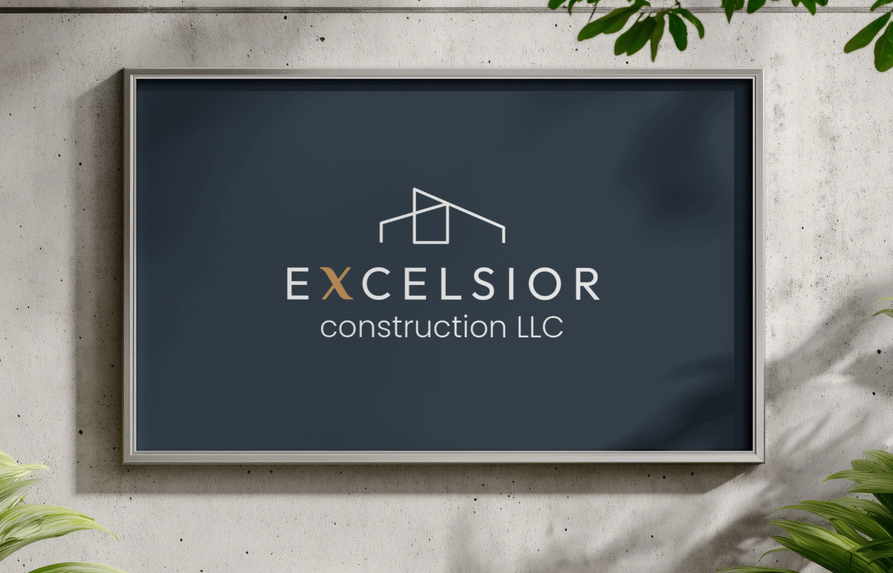
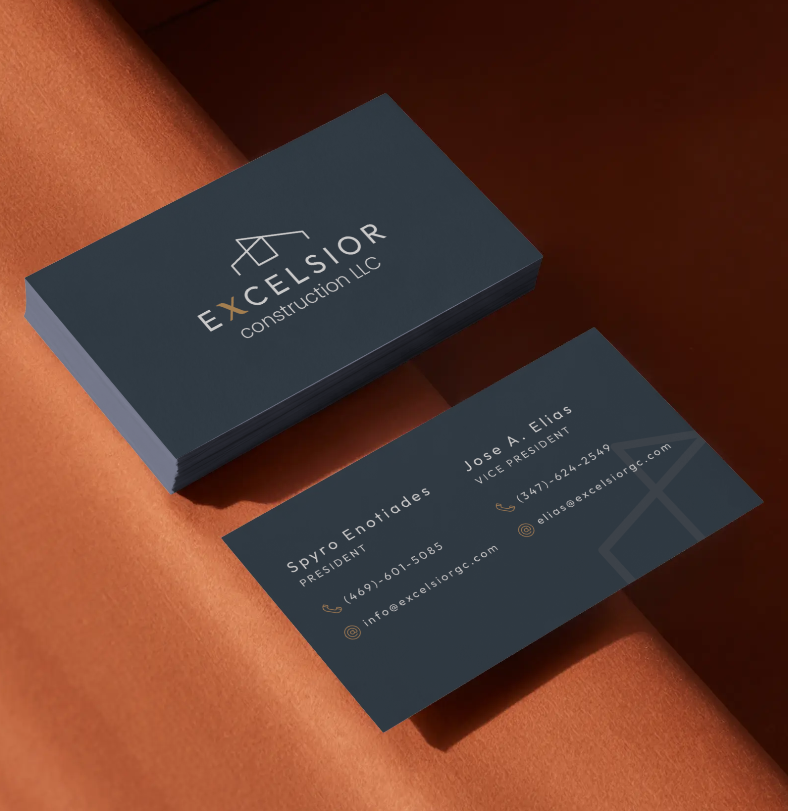
The final result is a complete and consistent visual identity system that reflects the company’s values and positioning. The brand communicates professionalism, clarity, and quality across all touchpoints.
From the logo to the business cards, every element works together to create a cohesive and recognizable brand presence, helping the company establish credibility in a competitive market.
Reflection
This project allowed me to develop a full branding system while working closely with real client requirements and constraints.
One of the key challenges was balancing a strong, structured aesthetic with a modern and approachable tone, ensuring the brand stood out without losing credibility.
If I were to continue this project, I would expand the identity into additional applications such as a website or branded communication materials to further strengthen the overall brand experience.